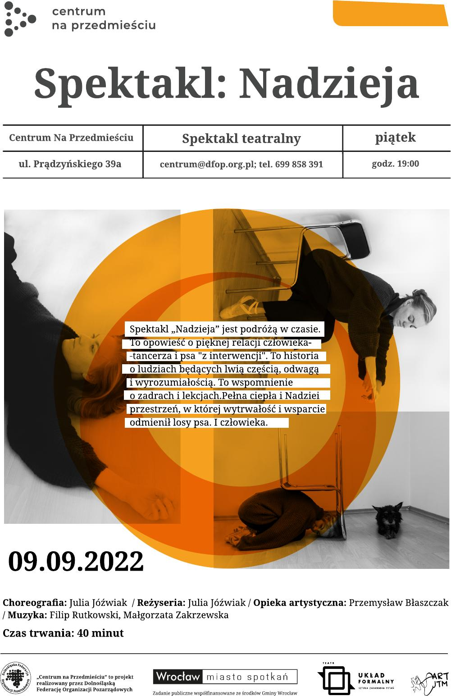

Hope
The play “Hope” is a journey throughout the time. It is a story about
a person-dancer and a dog from an intervention.
A Story about people who are brave and understanding.
It is a memory of betrayals and lessons.
A space full of warmth and hope, where perseverance and support
changed the dog's fate…
and man's too.

Next Show: